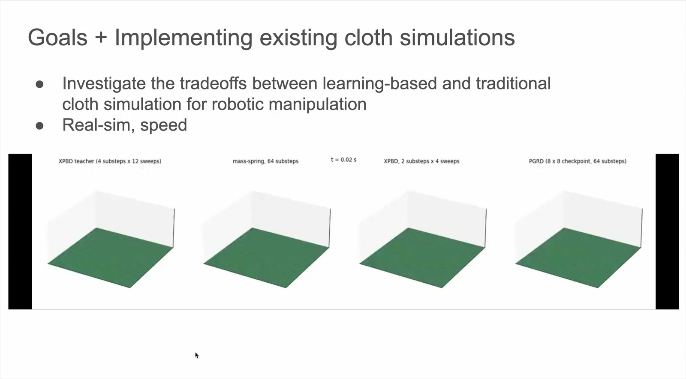
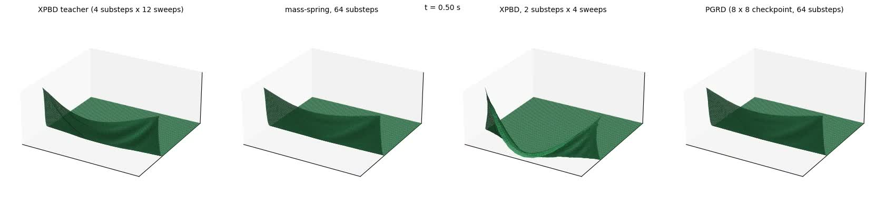
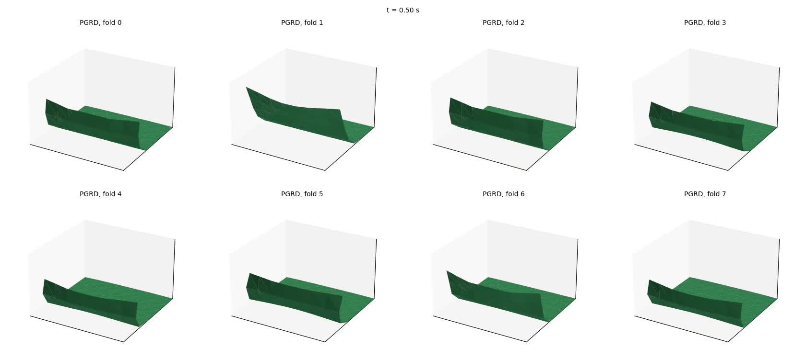
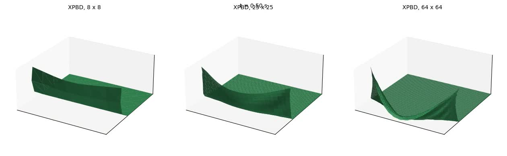
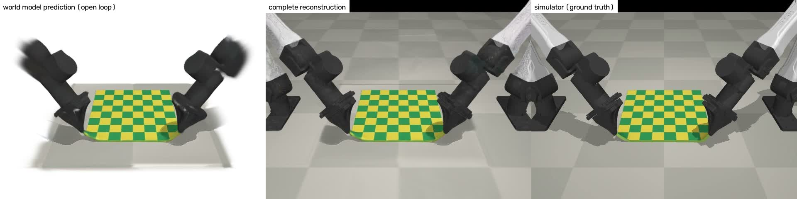

Project Materials
- Milestone report (PDF)
- Narrated milestone video
- Presentation slides
- Code and experiment artifacts
- Earlier voice recording

Summary
We are studying the accuracy and cost of cloth simulation for robotic folding. We have implemented a mass and spring solver, Extended Position Based Dynamics (XPBD), and a tabletop adaptation of Physics Guided Residual Dynamics (PGRD). In a small synthetic test, PGRD reduces average motion error but increases final frame error, while fused GPU physics is substantially faster than the hybrid.
In a separate experiment, we implemented a MuJoCo scene with robot arms and used a learned 3D world model to predict its visual dynamics. The demonstration captures the broad scene configuration, with visible artifacts. Our next step is to test whether learning can improve speed when methods are compared at similar motion error and contact quality. We plan to vary solver budgets, collect more measurements, add Newton VBD, and train a MeshGraphNets style model on the same trajectories.
Problem and Approach
A useful robot simulator must capture cloth motion without making training prohibitively slow. Small time steps improve numerical behavior but increase computation. Learned models offer another way to predict motion, although their errors can accumulate and their inference cost can exceed the cost of a simple physics solver.
Our original proposal considered a broad comparison of physics and learning. The current solver study focuses on two questions: whether a learned residual improves a calibrated spring model, and how much GPU throughput each method achieves. The current benchmark uses prescribed vertex grasps without simulated robot arms. It includes table contact but omits cloth self contact. Real-to-sim transfer from observed cloth is a longer-term goal. The results here use synthetic simulation data.
Cloth Solvers
The shared task starts with a 40 cm square cloth lying on a table. Two corners remain anchored while the opposite corners lift, cross the sheet, lower, and release. All methods use the same mesh, prescribed grasps, and control interval of 1/60 second.
- Mass and spring model. Semi implicit Euler integration with stretch, shear, and bending springs connecting vertices two edges apart.
- XPBD. Compliant distance constraints solved with sequential sweeps over groups of disjoint edges.
- PGRD. A calibrated spring step followed by a learned velocity correction at each free vertex. Held vertices receive no correction.
Our residual model
Following the PGRD approach, we first fit physical parameters and then train the correction. Our adaptation uses attention over neighboring mesh vertices in place of Point Transformer V3, a smaller decoder, and a temporal transformer with two layers and four frames of history. A search over nine parameter combinations fits spring stiffness and table friction.
Training uses windows of five steps and feeds predictions back into the solver. Gradients pass through the residual network and its history while the spring step remains frozen. After applying the residual, we project the displacement against the table and update velocity consistently. This is our adaptation for a fixed tabletop mesh, not a reproduction of the original paper’s flag experiment.
GPU implementation
We implemented portable PyTorch solvers and fused Metal physics kernels. Metal assigns one threadgroup to each cloth and runs all physics substeps in one dispatch per control step. PGRD uses the fused spring step, but its residual network still runs through PyTorch. The repository also includes trajectory export, comparison rendering, and tests for solver agreement and data split separation.
Simulation Videos
Solver comparison

PGRD test folds

Cloth resolution

Robot Cloth Manipulation and World Model
Our second milestone experiment uses two simulated robot arms to manipulate MuJoCo flex cloth. The pipeline renders each episode from four cameras and uses the 3D World Simulator to learn the scene dynamics. An autoencoder maps the views to a voxel latent representation that decodes to Gaussian scene representations. A dynamics model predicts the next latent from recent states and robot actions.
The demonstration compares an open-loop prediction, a complete reconstruction, and the simulator reference. The model captures broad cloth configuration and robot motion, but artifacts remain around the arms and scene geometry. This is a qualitative result. We have not yet measured its accuracy and throughput under the same conditions as the cloth solver benchmark.
Robot cloth holding

This experiment uses a different cloth representation from the spring and XPBD solvers. It shows progress on robot scene prediction, while contact handling, completed folding, and comparisons at matched accuracy remain open questions.
Motion Accuracy
The reported experiment uses an 8 × 8 mesh and 120 control steps. Seed 7 produces separate sets of 12 training, 4 validation, and 8 test trajectories with varied lift height and timing. The reference is a CPU XPBD teacher using four substeps and twelve sweeps per substep. Calibration uses training folds, and checkpoint selection uses full validation sequences. The selected demo checkpoint is update 125 of 200.
| Method | Motion RMSE | Final frame RMSE |
|---|---|---|
| Calibrated spring | 1.95 mm | 2.90 mm |
| PGRD | 1.76 mm | 3.61 mm |
The residual lowers error over the full sequence by about 10%, but raises final frame error by about 24%. This matters when a robot’s reward depends on the settled fold. Both metrics exclude vertices held during the measured frame.
An additional experiment with eight spring substeps produced 1.76 mm motion error and 3.37 mm final frame error for PGRD, compared with 1.96 mm and 3.01 mm for its calibrated spring control. Both the eight and twelve substep hybrids achieved roughly 29,000 environment steps per second with fused Metal at batch 64.
Limitations. These errors measure agreement with a synthetic teacher, not real cloth. The solver scene omits cloth thickness and self contact. Layers can appear aligned while intersecting, so the current metrics do not establish physically valid folding.
Simulation Performance
The following measurements were taken on an Apple M5 Pro with 64 vertices per cloth. CPU measurements use one PyTorch thread. Spring and PGRD use twelve substeps. The timed XPBD baseline uses two substeps and four sweeps, fewer than the reference teacher.
| Solver | CPU | Fused Metal |
|---|---|---|
| Spring | 0.52 | 0.20 |
| XPBD | 1.06 | 0.21 |
| PGRD | 0.84 | 0.92 |
| Solver | CPU | PyTorch MPS | Fused Metal |
|---|---|---|---|
| Spring | 13,600 | 33,900 | 1,390,000 |
| XPBD | 18,400 | 11,200 | 1,190,000 |
| PGRD | 4,330 | 15,900 | 28,700 |
Fusion improves PGRD throughput by about 1.8 times over portable PyTorch MPS and 6.6 times over one CPU thread. The fused classical solvers are still much faster on this scene. Reducing spring substeps has little effect on hybrid throughput once physics is fused. These results do not yet show that learning improves speed at matched accuracy.
Latency synchronizes after every control step. Throughput synchronizes after blocks of sixteen steps with states and actions kept on the device. Timing includes cloth dynamics, prescribed grasps, and table contact. It excludes warmup, recording, transfers for metrics, file output, rendering, policy inference, and robot dynamics. These are measurements from one machine.
Remaining Work
- Use a teacher with more complete contact handling and measure self intersections, error over different prediction horizons, and settled fold quality.
- Compare methods at matched error and contact quality. Add a Newton VBD physics baseline and a learned dynamics control trained on the same trajectories.
- Verify the portable CUDA implementation on NVIDIA hardware and run the original PGRD flag evaluation on Linux/CUDA.
- Collect more measurements across solver settings and hardware to understand which parts of the computation limit speed. Evaluate the learned world model and investigate robot interaction in the classical cloth implementations.
- Add individual contribution statements, update the paper as experiments progress, and prepare the final video and presentation.
Real cloth validation and policy transfer remain future work. The current results come from simulation.
Implementation and References
The solver code uses Python, NumPy, PyTorch, and custom Metal kernels. Rendering uses Matplotlib and FFmpeg. The measurements presented here use an Apple M5 Pro. The team also has access to Cory Hall computers, personal NVIDIA systems, and research lab manipulators for further experiments.
Our implementation includes the tabletop PGRD adaptation, fused physics, and evaluation scripts. PGRD is an existing method that we build on. The repository also contains a separate MuJoCo and world model pipeline, reported above as a separate milestone experiment. Its outputs are not part of the PGRD accuracy and timing tables. Individual contributions will be documented in the completed report.
- XPBD: Position-Based Simulation of Compliant Constrained Dynamics, the constraint formulation used by our physics solver.
- 3D World Simulator, the learned model used in our robot experiment.
- Newton VBD documentation, a reference for the planned physics baseline.
- PGRD paper and appendix and authors’ implementation.
- Learning Mesh-Based Simulation with Graph Networks, a reference for the planned learned control.
- Codimensional Incremental Potential Contact and Benchmarking the Sim-to-Real Gap in Cloth Manipulation, resources for extending contact and real cloth evaluation.
Experiment details and reproduction commands are maintained in the project repository and its experiment notes.